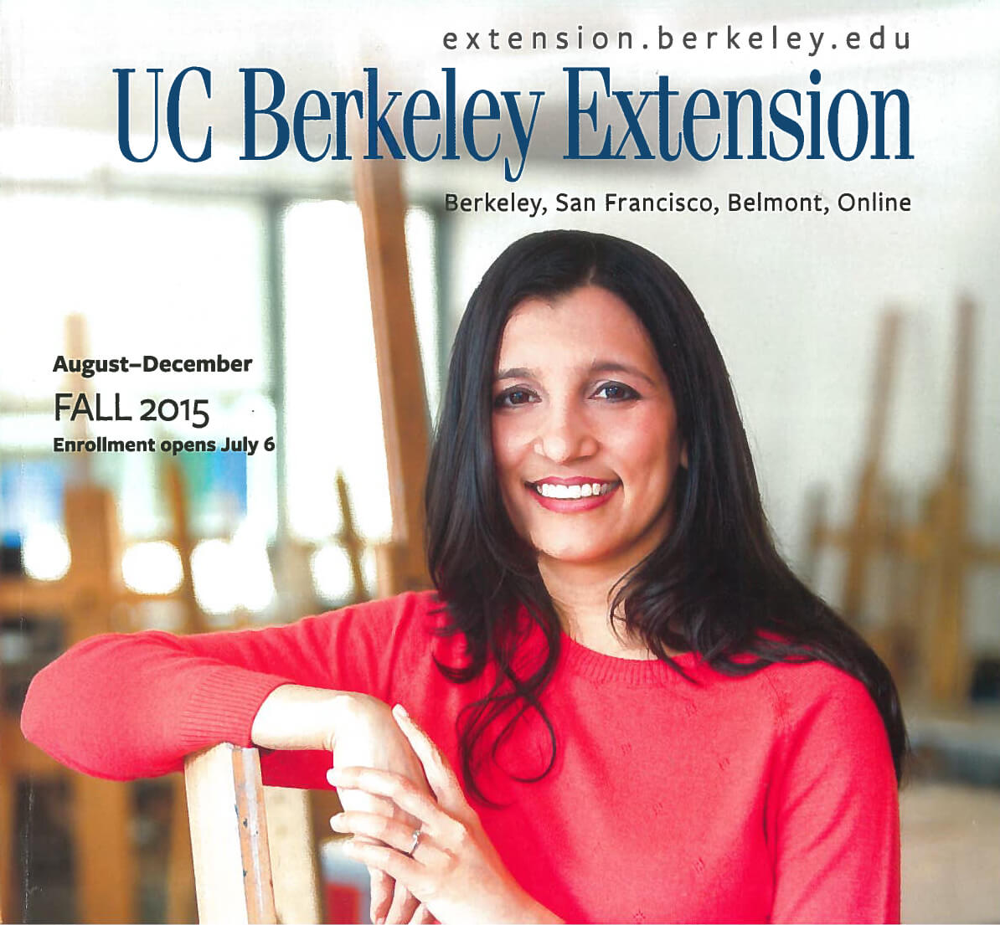
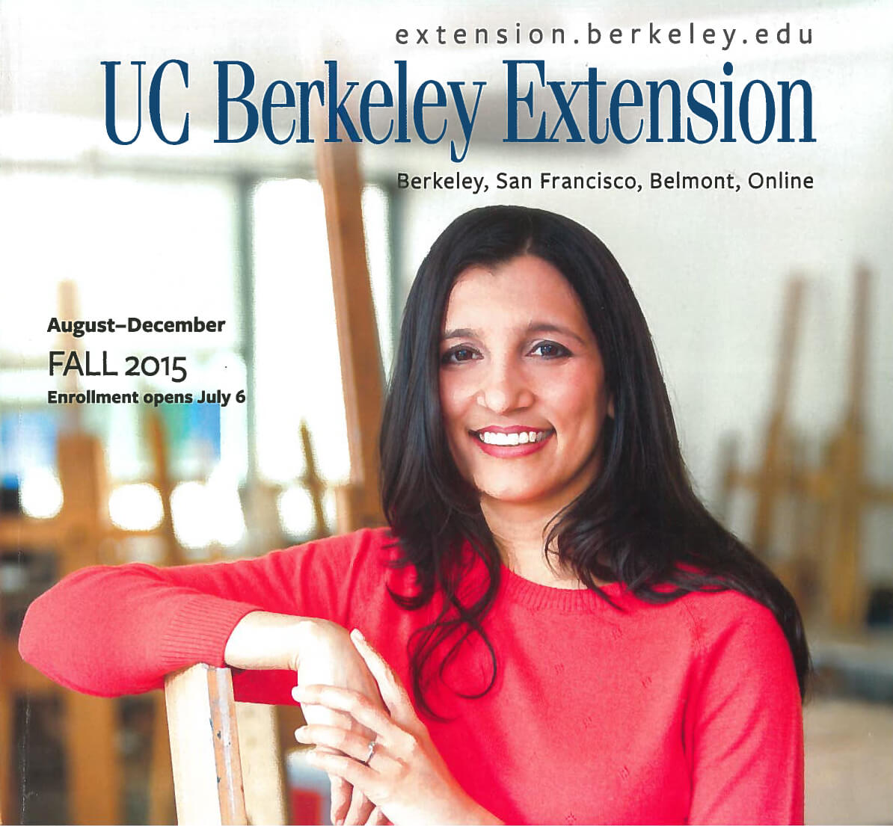

2021
2021
With the rapid development of high speed internet, Extension launched UC Berkeley’s first online degree in collaboration with UC Berkeley's School of Public Health in 2012. Following its success in online course production, Extension created the Berkeley Resource Center for Online Education to provide highest quality production services to all departments of the university. To improve accessibility to the growing number of professionals in downtown San Francisco, Extension opened its Spear Street campus in the heart of the East Cut in 2015.

 
